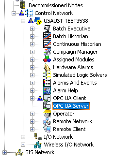

Note: This task describes how to create a DeltaV OPC UA server without
security features. Refer to the related information for information on OPC UA
security.
Navigate to the OPC UA Server subsystem in the DeltaV Explorer
hierarchy. The OPC UA server subsystem is underProfessionalPlus workstations, Application workstations, and
DeltaV PK controllers.
This procedure is for an OPC UA server on a
ProfessionalPlus workstation. Creating a server on a DeltaV PK controller is
similar.
Note: Make sure the node name does not contain a
$ character. This is not a legal character in OPC UA
applications with digital certificates.

Select the
OPC UA Server subsystem, right-click and
select
Properties. The system displays the
OPC UA Server dialog.
Click
Enable OPC UA Server.
Important:
Enabling the OPC UA server can
consume large amounts of memory (viewable in the FreMem parameter). This
happens because OPC UA creates an address space for every parameter of every
function block in each module in the controller.
On the
General tab, select an option under
User Authentication.
Refer to Related information for topics on security and user
authentication.
Use the
Certificate tab to generate or import your certificate.
The PK controller's OPC UA server has an
Advanced tab. Use this to specify the primary
and secondary port addresses.
The endpoint URL is shown on the
Advanced tab.
Click
OK.
Right-click the OPC UA Server and select
Download.